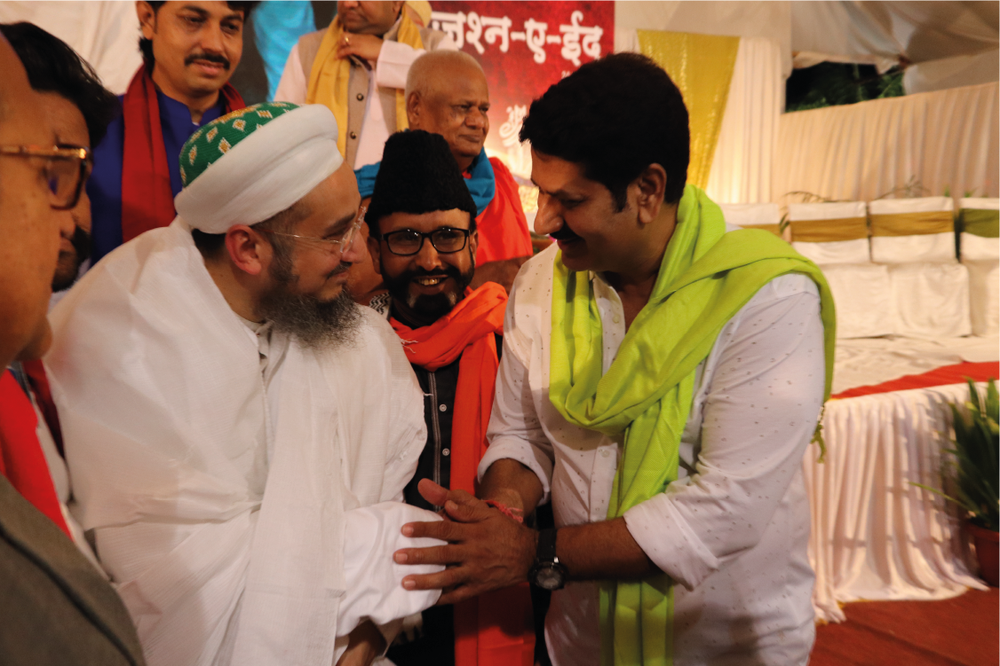
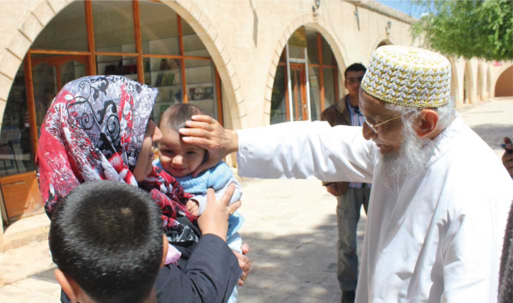
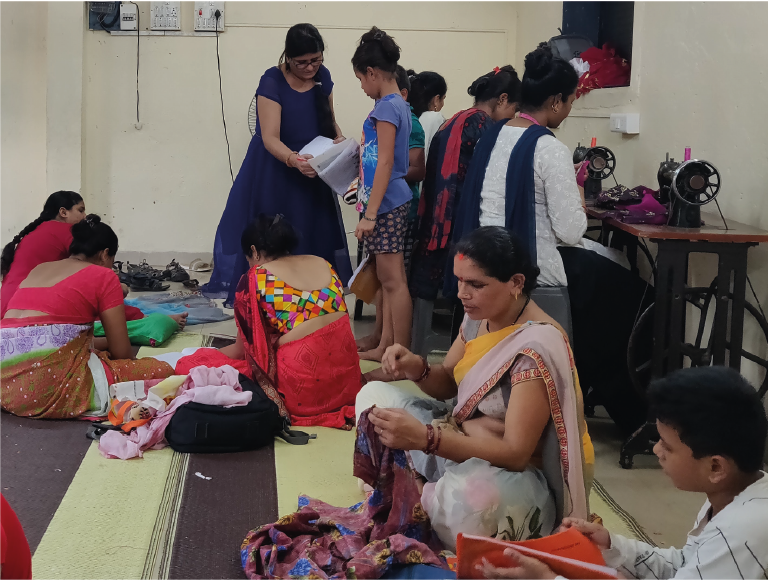
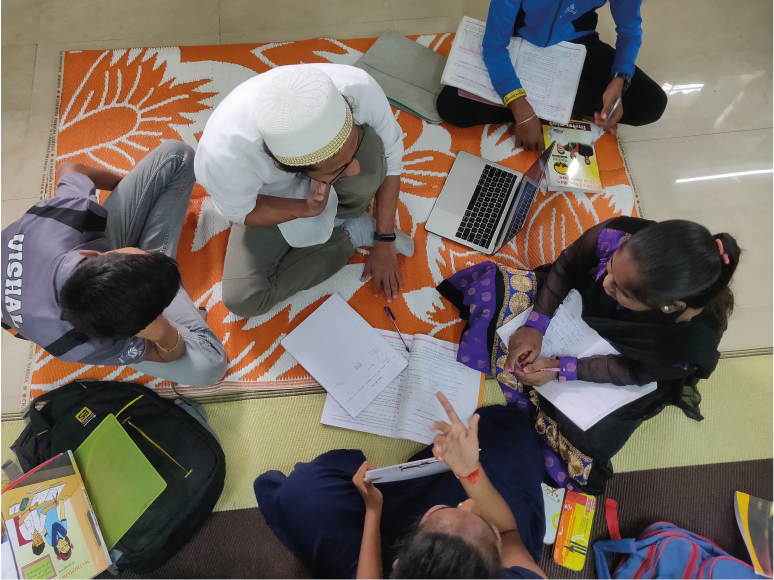
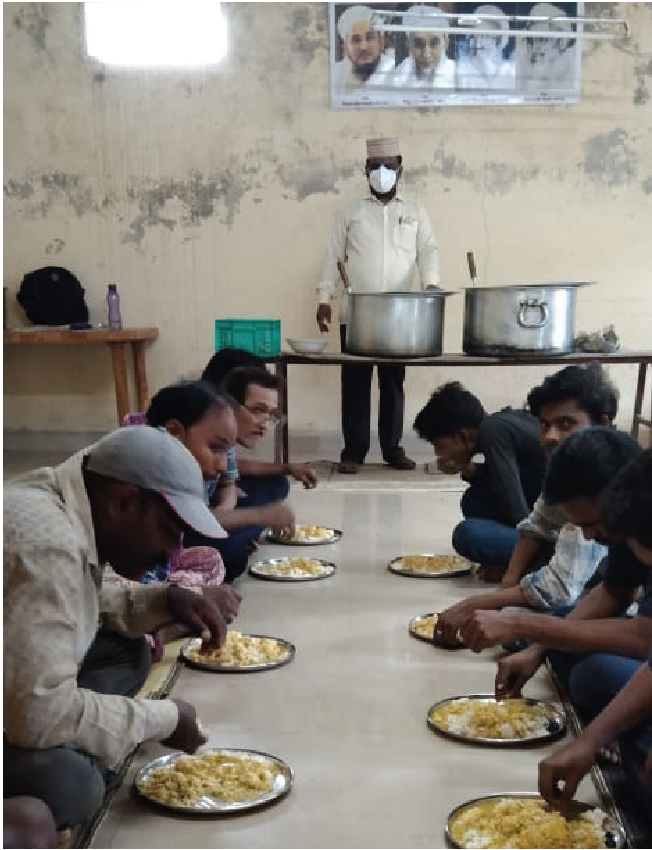
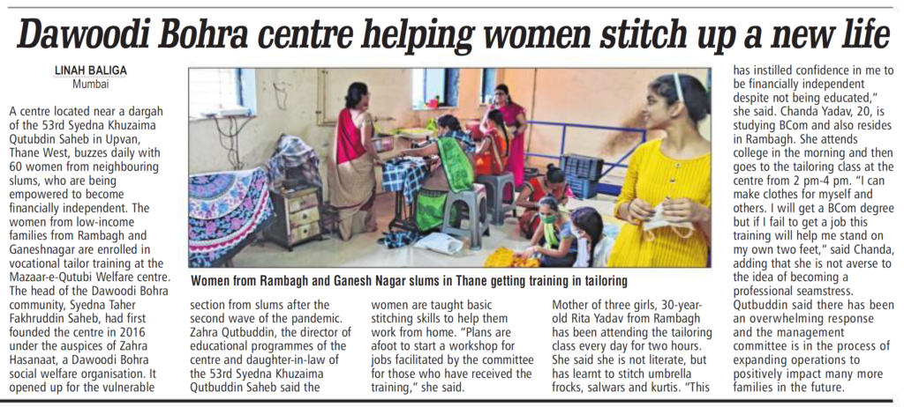

Syedna Taher Fakhruddin TUS founded the center in 2017 under the auspices of Zahra Hasanaat, the Dawoodi Bohra Social Welfare Organization. The center in located in the vicinity of the Mausoleum of Syedna Khuzaima Qutbuddin, in Upvan, Thane.


The center’s facilities and services are open to all irrespective of faiths and creed. This manifests Syedna Fakhruddin’s philosophy that societies should strive to be open and inclusive. Syedna TUS emphasizes the need to restore the tradition of mutual respect and fellowship with other religious communities and engage in enhancing the social welfare of fellow human beings. Syedna TUS encourages his community to be helpful to all God’s children. The Prophet Mohammed SA said, “All humans are children of God, and God loves him who helps his children.”



Mazaar-e-Qutbi Niyaaz
Under the guidance and direction of Syedna Taher Fakhruddin Saheb, we serve niyaaz (lunch) six days a week to women, men and children from all walks of lives who are welcomed irrespective of their religion or socio-economic status with the sole intention that whoever comes to Syedna Qutbuddin Saheb’s Mazaar should be satiated.
The entire Niyaz operation is managed and run by dedicated volunteers with a strong focus on serving wholesome and nutritious vegetarian food with good quality ingredients and sanitary cooking and service.
To ensure that funds are utilized effectively, tight controls on sourcing and preparation of the niyaaz is done. To this end, we have a cost structure with extremely minimal overhead expenses:
| Cost Component | Share |
| Materials | 53.3% |
| Cooking Labour | 19.7% |
| Packing & Serving Labour | 21.3% |
| Overheads | 5.7% |
| Total | 100% |
We benefit from a truly global donor profile, and your generous donations assist us to expand our efforts.
PAYPAL CTA
Sponsorship
Under the umbrella of Zahra Hasanaat, the Mazaar-e-Qutbi Social Welfare Center offers a variety of classes and tuitions. In fact, our vocational tailoring courses for women from low-income families was recently featured in the media.

Through the Qutbi Jubilee Scholarship Fund (QJSP), we also sponsor deserving students to pursue their education. Syedna Saheb has directed that at least one-third of QJSP higher education funds be earmarked for women students.
QJSP's mission is to support students to be successful in all aspects of their life and to ensure that they are able to fulfill their academic aspirations whilst committing to good character development through community service.
With an initial endowment made by Syedna Qutbuddin Saheb, along with the support of our generous donors, we have been able to continually expand our offerings.
Join us and commit to serving the less privileged:
| Sponsor a child's education for one year | ₹50000 | PayPal |
| Sponsor a vocational training class | ₹30000 | PayPal |
| Sponsor medical checkup for one family | ₹2000 | PayPal |
| Sponsor a women's health clinic for one week | ₹15000 | PayPal |
| Sponsor.... | ₹xxxxx | PayPal |